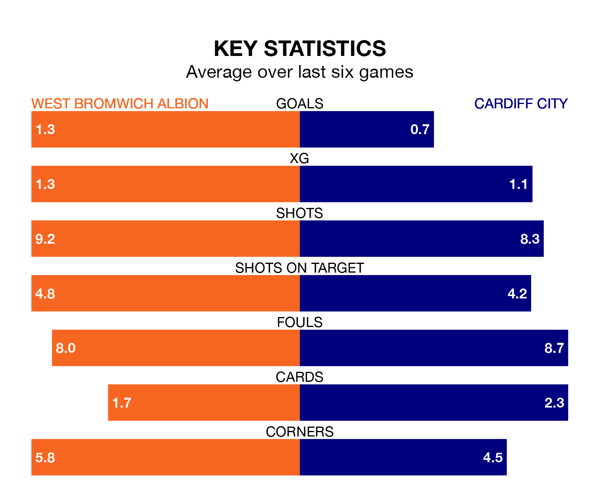

West Bromwich Albion are heavy favourites to keep all three points at home in Tuesday's late kick-off against Cardiff City.
The Baggies, who sit fifth in EFL Championship with 30 games played, are priced at 1.6 to seal victory at the Hawthorns.
Sitting nine places and nine points behind them in the table, Cardiff are 5.5 to win with *Betting Company*, while the draw is at 3.7.
In Alex Palmer, West Bromwich can rely on one of the league's safest pair of hands. He has kept 13 clean sheets in his 30 appearances this season, and no 'keeper has prevented the opposition scoring more often in EFL Championship.
In Cardiff's net, Jak Alnwick has seven clean sheets in 24 games. He has conceded a goal every 72 minutes, 40% more often than the 104 minutes between goals for Palmer.
In the last 10 years, West Bromwich and Cardiff have played each other on eight occasions. West Bromwich won three of them, Cardiff one, and they drew four times.
On average, the Baggies scored 1.9 goals and the Bluebirds 1.1 in those matches.
Their last meeting was on November 28, when West Bromwich won 1-0 away.
With 36 goals in 30 games so far this season, City are scoring at below the league average rate with 1.2 goals per game. And they are conceding at an average rate, letting in 41 goals at a rate of 1.4 per game.
Albion, meanwhile, are average scorers, with 1.4 goals per game. They have conceded 1.0 goal per game.
The Baggies are in mixed form in EFL Championship, with three wins and a draw from their last six games.
With two wins and four losses over that period, the Bluebirds' form is worse – they have taken six points from 18, compared to the hosts' 10.
West Bromwich's last match was on Saturday, a 2-2 draw against Ipswich Town, with John Swift and Tom Fellows getting the goals for the Baggies.
Cardiff lost 2-0 against Preston North End last time out, also on Saturday.
Tuesday's match will be refereed by Rebecca Welch, who has taken charge of six EFL Championship games so far this season, issuing one red card and booking 32 players. He has not awarded any penalties.
The last Cardiff game Welch refereed was the 3-2 loss at home against Norwich City on November 11. He is yet to oversee a match featuring West Bromwich this season.
Updated: 13:30 (UTC), 12/02/24